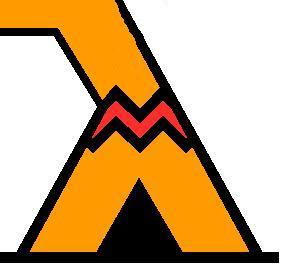

Typi
Application Web de typage d’un mini-ML fonctionnel et impératif. (Juste un typeur lamdba... Typi, yeah pretty indeed).
Type environement
| Names | Types |
|---|
Manual
| Commands | Effects |
|---|---|
| Enter / Return | Submit code |
| Up / Down | Cycle through history |
| Shift + Enter | Multiline edition |
Hi, what type of Type do you like? ---------------------------------------- Master STL - M2 - Module TAS - 2014/2015 synthetiseur de types à la ML